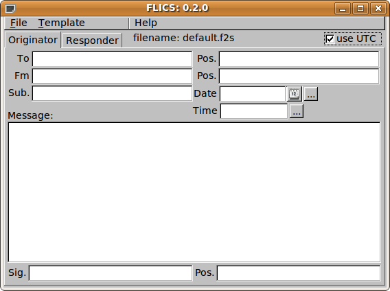
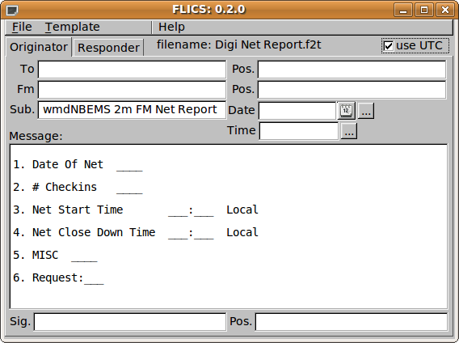

flics - quick guide
flics is a simple forms management editor for the ICS-213 emergency
management report. It's data files are pure ASCII text that can
be sent from point to point using the internet, amateur radio, or other
electronic link. The data files are designed to minimize the
transfer size. This is particularly important on amateur
HF. The data file and the transfer file are one in the same, but
can be further encapsulated using either flarq or wrap for the purpose
of confirming the received file integrity.
The user prepares, answers and views all ICS-213 data files from the single user interface dialog:

The File and Template menus are:


File:
New - clear all fields and name the default file "new.f2s"
Open - open an existing file - flics data files have the extension ".f2s", read as "form 2 send"
Save - save the current file to the name in the "file:" display box
Save As - save using a new filename that the user provides
Write - write the data to an ICS-213 pretty print form using Rich Text Edit format strings (file extension ".rtf")
Q-forms (Import / Export)
Import the data fields from a Qforms eXtended Markup Language (xml) file
Export the data fields to a Qforms compatible xml file
Wrap (Import / Export / AutoSend)
Import the data fields from a Wrapped ICS data file
Export the data fields to a Wrapped ICS data file
Create a wrapped ICS datafile and save in the NBEMS.files/WRAP/auto
directory. If running, fldigi will find and automatically
transmit the file.
Template:
Load - load an existing template file - flics template files have the extension ".f2t", read as "form 2 template"
Save - save the current form as a template file, using the default (or current) filename
Save As - save the current form as a template file, user provides the filenam
Note: data files and template files are identical. The only
difference is their location in the computer directory structure and
their extension. Message files and template files maintain their
uniqueness by virture of their file name. If you reuse a filename
the old data will be lost.
File locations:
On XP: C:\Documents and Settings\<username>\NBEMS.files
On Vista: C:\Users\<username>NBEMS.files
On Linux: /home/<username>/NBEMS.files
Data files are located in the sub directory "ICS/messages"
Template files are located in the sub directory "ICS/templates"
Pretty print files (.rtf) are located in the "ICS/" subdirectory.
Here is an example of a template that has been loaded for processing
and subsequent save as a message file. If you load a template
file, modify it for transmission and save it using the "File/Save" menu
item it will default you to the "Save As" menu item. You should
rename the file to something symbolic to its current usage.

The data file for this template "Digi Net Report.f2t" contains:
============================= file contents ============================
<flics>0.1.05
<to:0
<p1:0
<fm:0
<p2:0
<d1:0
<t1:0
<sb:26 wmdNBEMS 2m FM Net Report
<s1:0
<p3:0
<s2:0
<p4:0
<d2:0
<t2:0
<mg:154
1. Date Of Net ____
2. # Checkins ____
3. Net Start Time ___:___ Local
4. Net Close Down Time ___:___ Local
5. MISC ____
6. Request:___
<rp:0
============================= file contents ============================
The equivalent Qform data file is larger by virtue of the xml structure.
The Rich Text Format file that the File/Write menu item produces can be
opened with Microsoft Word, WordPad, Open Office, or any other word
processing software that can read and write RTF files. Use that
software for printing the report.